การสั่งพิมพ์งาน: เลือกเครื่องพิมพ์ชื่อ
Follow-you-print on 10.204.24.244 เมื่อส่งงานพิมพ์แล้ว
สามารถไปแตะบัตรเพื่อสั่งปล่อยเอกสารที่เครื่องพิมพ์ Xerox ได้ทุกจุดในอาคารPrinting: Select printer
Follow-you-print on 10.204.24.244. After sending your print job, simply tap your ID card at
any Xerox multifunction printer across campus to release your documents.
Step 01
เปิดหน้าต่าง Connect to ServerOpen Connect to Server
เปิด Finder (ไอคอนหน้ายิ้มบน Dock) หรือคลิกขวาที่ไอคอน Finder แล้วเลือก
Connect to Server...
หรือที่แถบเมนูด้านบนให้คลิก Go > Connect to Server... (คีย์ลัด
Command + K)
ในช่อง Server Address พิมพ์ smb://10.204.24.244 แล้วคลิก Connect
Open Finder (smiley-face icon on the Dock), or right-click the Finder icon and
choose Connect to Server....
Alternatively, in the top menu bar click Go > Connect to
Server... (shortcut Command + K).
In the Server Address field type smb://10.204.24.244 and click
Connect.
smb://10.204.24.244
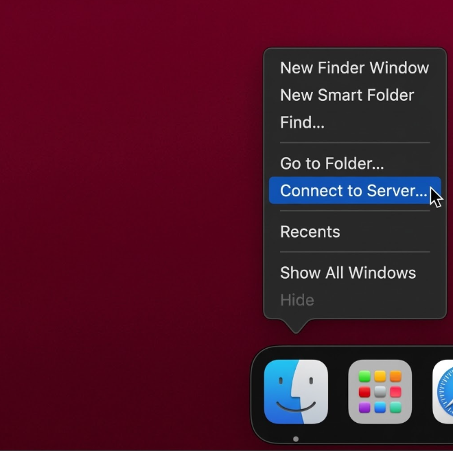
รูปที่ 2.1: คลิกขวาที่ไอคอน Finder บน Dock แล้วเลือก Connect to Server...Figure 2.1: Right-click Finder on the Dock and choose Connect to Server...
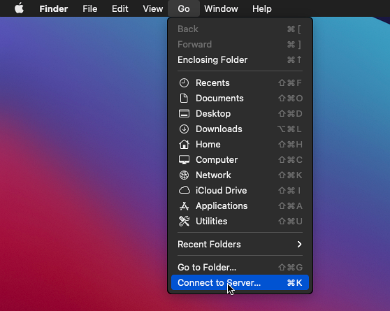
รูปที่ 2.2: เมนู Go > Connect to Server... (Cmd + K)Figure 2.2: Go menu > Connect to Server... (Cmd + K)
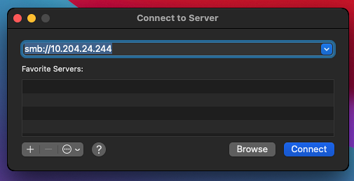
รูปที่ 2.3: พิมพ์ที่อยู่เซิร์ฟเวอร์ smb://10.204.24.244 แล้วคลิก ConnectFigure 2.3: Type the server address smb://10.204.24.244 and click Connect
Step 02
ยืนยันตัวตนและเลือกโฟลเดอร์ Driver MACAuthenticate and Mount Driver MAC
เมื่อมีหน้าต่างยืนยัน You are attempting to connect to the server ให้คลิก
Connect
ดับเบิลคลิกไฟล์ติดตั้ง .pkg (FUJIFILM Print Driver for Mac OS X Installer)
เพื่อเริ่มติดตั้ง
The Driver MAC Finder window opens. It is recommended to choose
Mac OS 26.0 above even on older macOS versions; install older driver versions only if you
encounter issues.
Open that folder and double-click the .dmg file to mount it.
Double-click the .pkg installer (FUJIFILM Print Driver for Mac OS X Installer)
to start installing.
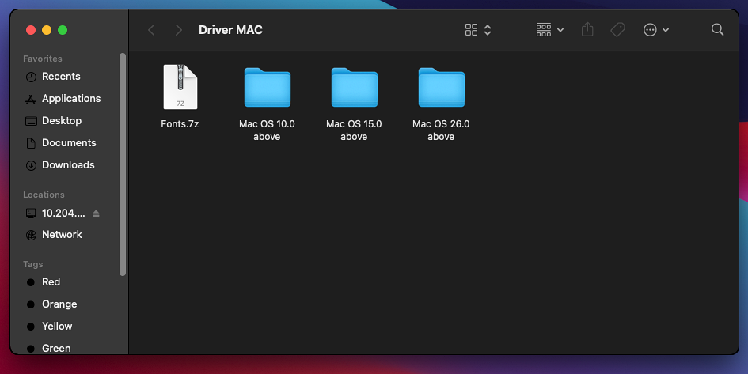
รูปที่ 2.7: โฟลเดอร์ Driver MAC บน Print ServerFigure 2.7: Driver MAC folders on the Print Server
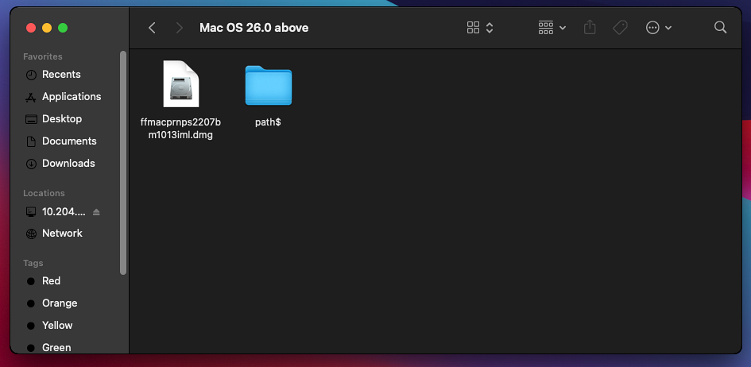
รูปที่ 2.8: ไฟล์ติดตั้งภายในโฟลเดอร์ของเวอร์ชัน macOSFigure 2.8: Installer files inside the macOS version folder
ข้อกำหนดสำคัญ: ส่วนท้าย URL ต้องระบุพารามิเตอร์
?encryption=no เสมอ เพื่อป้องกันปัญหาค้างสถานะ Hold for AuthenticationCritical Requirement: The URL must end with
?encryption=no to prevent the print queue from getting stuck on "Hold for
Authentication".
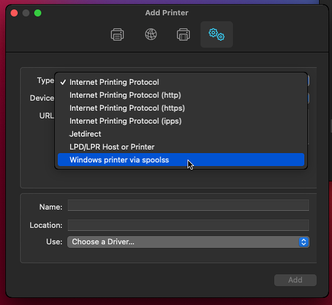
รูปที่ 2.18: เลือก Type: Windows printer via spoolssFigure 2.18: Choose Type: Windows printer via spoolss
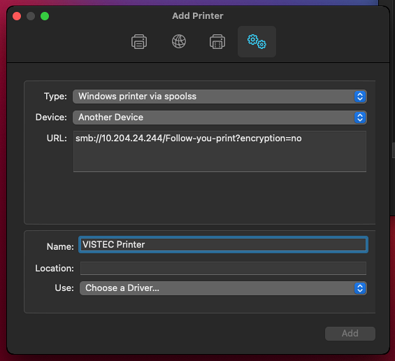
รูปที่ 2.19: Device: Another Device และกรอก URLFigure 2.19: Device: Another Device and enter the URL
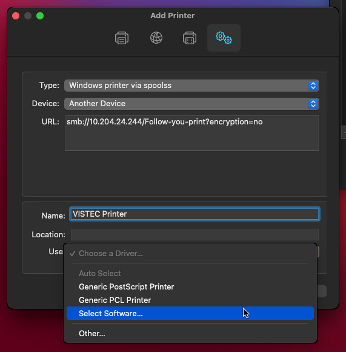
รูปที่ 2.20: กรอก Name แล้วเลือก Use > Select Software...Figure 2.20: Enter the Name, then choose Use > Select Software...
Step 07
เลือก Driver และเพิ่มเครื่องพิมพ์Select the Driver and Add the Printer
ในหน้าต่าง Printer Software พิมพ์ค้นหา 3371
เลือก FF K529t for ApeosPort-VI C3371 PS แล้วคลิก OK
ตรวจสอบว่าช่อง Use แสดงชื่อไดรเวอร์ที่เลือก แล้วคลิก Add
หากมีหน้าต่างตั้งค่า Options (เช่น Paper Tray Configuration) ให้ตรวจสอบค่าแล้วคลิก
OK
In the Printer Software window search for 3371.
Select FF K529t for ApeosPort-VI C3371 PS and click OK.
Confirm the Use field shows the chosen driver, then click Add.
If an Options window appears (e.g. Paper Tray Configuration), review the values and click
OK.
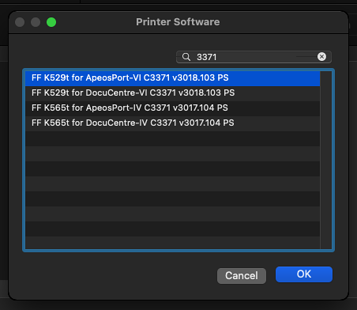
รูปที่ 2.21: ค้นหา 3371 และเลือกไดรเวอร์ FF K529t for ApeosPort-VI C3371 PSFigure 2.21: Search 3371 and choose FF K529t for ApeosPort-VI C3371 PS
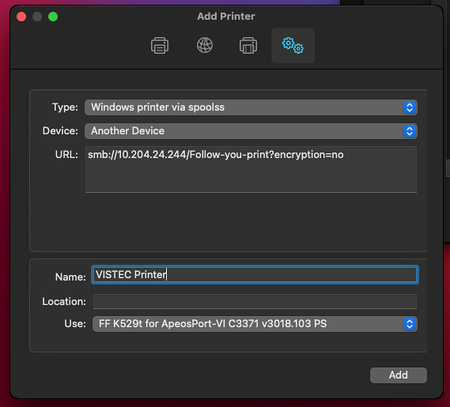
รูปที่ 2.22: ตรวจสอบข้อมูลทั้งหมดแล้วคลิก AddFigure 2.22: Review all fields and click Add
กดปุ่ม Log In / Out บนแผงปุ่มกด 1 ครั้ง เพื่อเข้าสู่หน้าจอลงทะเบียนผู้ใช้
Tap your employee or student ID card onto the white Card Reader located on the right side of the
machine. If unlinked, the screen will indicate login failed; proceed to the next step.
Press the Log In / Out button on the physical keypad once to enter the user
registration screen.
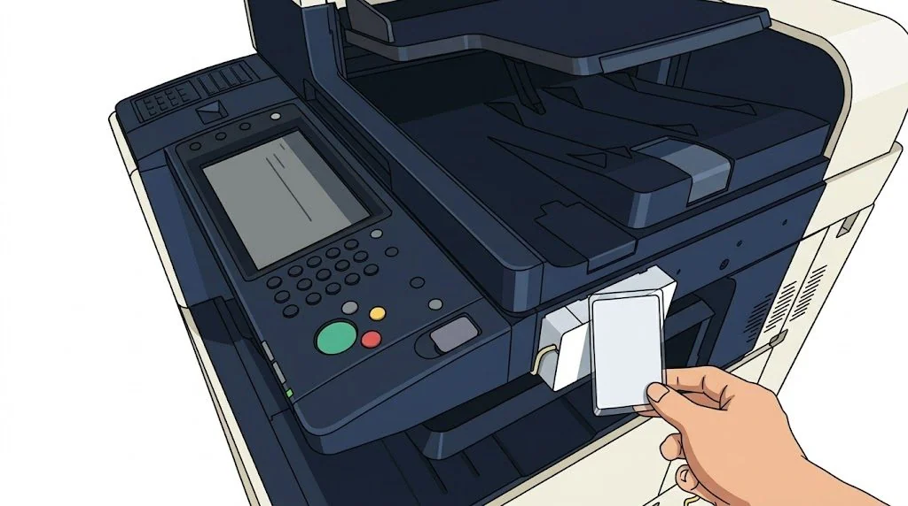
รูปที่ 3.1: นำบัตรแตะที่กล่อง Card Reader ด้านขวาของเครื่องFigure 3.1: Tap your ID card onto the Card Reader on the right side
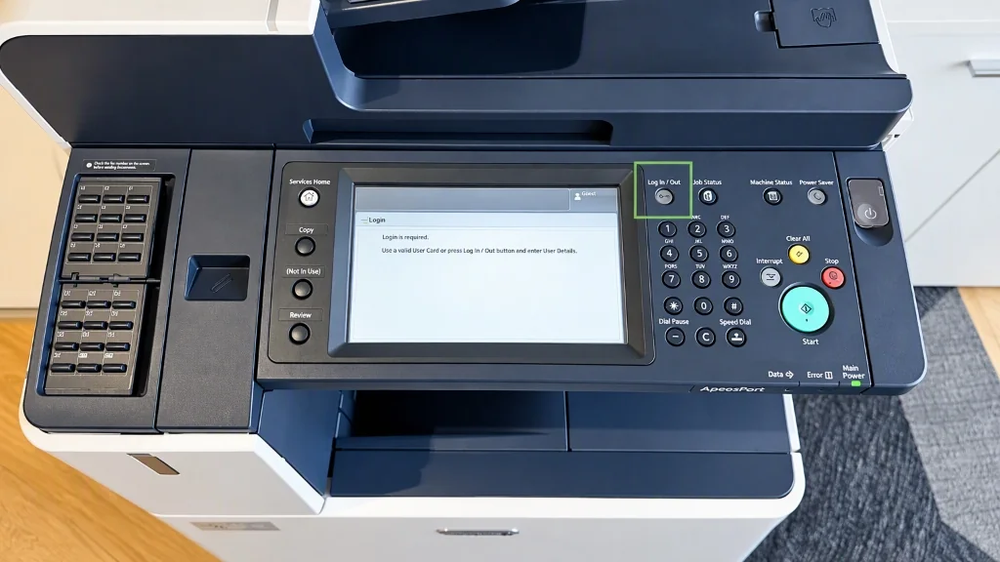
รูปที่ 3.2: ปุ่ม Log In / Out บนแผงควบคุมFigure 3.2: Log In / Out button on physical control keypad
Step 02
กรอก Username และ Password เพื่อผูกบัตรEnter Credentials and Bind Card
ให้กรอก Username บัญชี VISTEC แล้วกดปุ่ม Next
กรอก Password ให้ถูกต้อง แล้วกดปุ่ม Enter
หลังจากที่ Login แล้วจะขึ้น Menu (ดังรูปที่ 3.4) หลังจากนั้นให้ลองแตะบัตรอีกครั้ง ถ้าได้จะขึ้น
User Details validated. (ดังรูปที่ 3.5) แต่ถ้าไม่ได้จะขึ้น failed ต้องทำการ login
ใหม่เพื่อลองอีกครั้ง
Enter your VISTEC Username and tap Next.
Enter your Password accurately and press Enter.
After logging in, the Main Services Menu will appear (Figure 3.4). Then, tap your card again. If
successful, the screen will display User Details validated. (Figure 3.5). If it shows
failed, please log in again to retry.
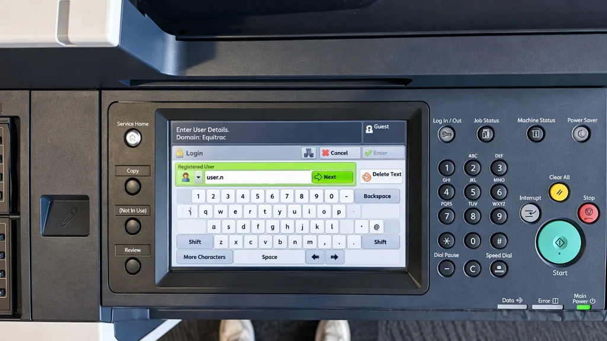
รูปที่ 3.3: หน้าจอกรอก Username และ Password เพื่อผูกบัตรFigure 3.3: Touchscreen prompt to enter Username and Password
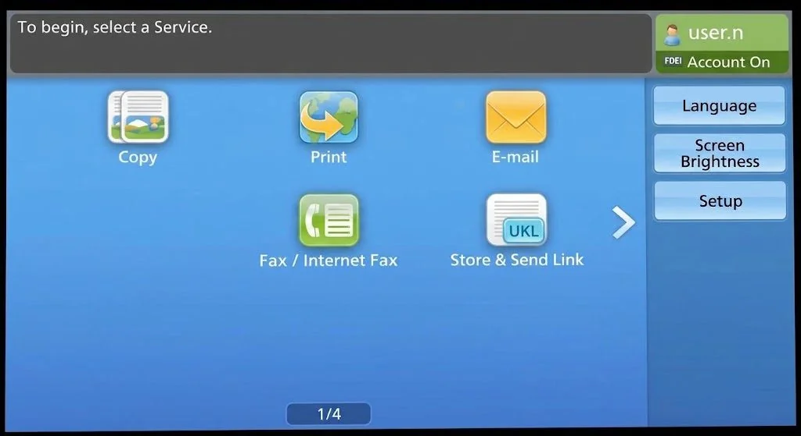
รูปที่ 3.4: หน้าจอเมนูหลักหลังจากเข้าสู่ระบบสำเร็จFigure 3.4: Main Services Menu screen after successful loginรูปที่ 3.5: หน้าจอแสดง User Details validated เมื่อแตะบัตรสำเร็จFigure 3.5: Screen displays "User Details validated" upon successful card tap